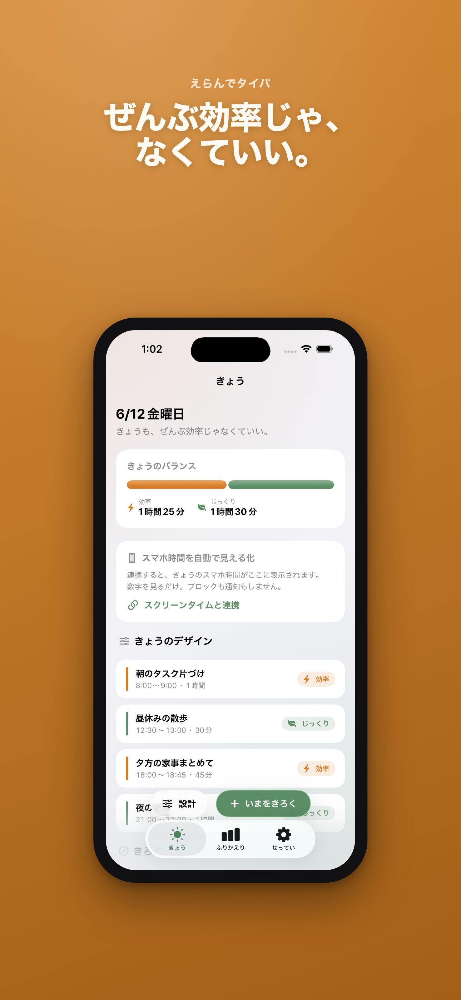
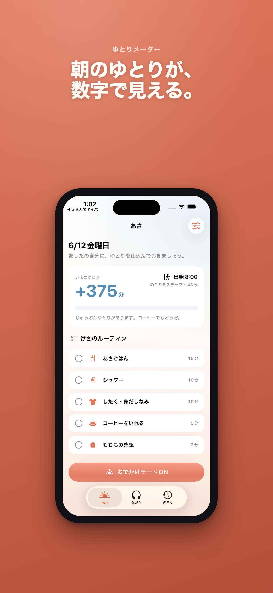
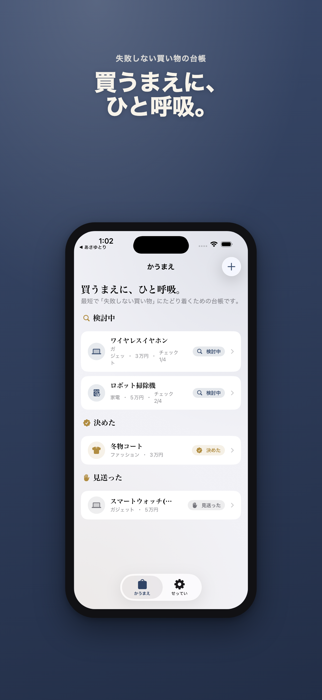

毎日の小さな判断を、少しだけ軽くするアプリ。
時間の使い方、朝の出発、買い物前の迷い、楽譜、読書、日本語学習、Mac作業。生活と制作の中で何度も起きる「ちょっと困る」を、静かに整える個人開発アプリです。



アプリ一覧
読み物
各アプリが扱う困りごとを、検索から読める短い記事にまとめています。
サポート
ご質問・不具合報告・ご要望はメールで受け付けています。通常数日以内に返信します。
よくある質問
Q. データはどこに保存されますか?
A. 対象アプリの記録データは端末内に保存されます。開発者のサーバーはありません。
Q. アカウント登録は必要ですか?
A. 不要です。